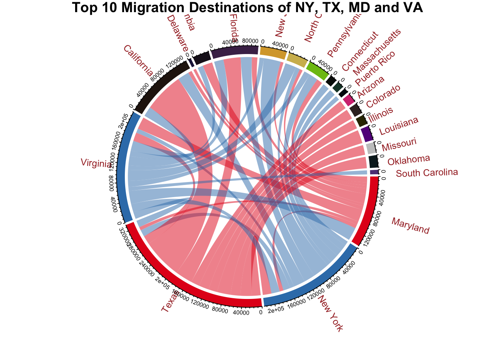

##Task One
rm(list=ls())
library("readxl")
library(dplyr)
library(tidyverse)
d<- read_xls("data/State_to_State_Migrations_Table_2018.xls")## New names:
## * `` -> ...2
## * `` -> ...3
## * `` -> ...4
## * `` -> ...5
## * `` -> ...6
## * ...##Task Two
temp<-d
temp<-temp[-c(1:5, 78:86), -(2:9)]# remove footnotes and extra columns
colnames(temp)<-c() # remove column names from the orignal table
unlist(c(temp[,1])) # check row names## [1] NA NA NA
## [4] "United States2" NA "Alabama"
## [7] "Alaska" "Arizona" "Arkansas"
## [10] "California" NA "Colorado"
## [13] "Connecticut" "Delaware" "District of Columbia"
## [16] "Florida" NA "Georgia"
## [19] "Hawaii" "Idaho" "Illinois"
## [22] "Indiana" NA "Iowa"
## [25] "Kansas" "Kentucky" "Louisiana"
## [28] "Maine" NA "Maryland"
## [31] "Massachusetts" "Michigan" "Minnesota"
## [34] "Mississippi" NA "Missouri"
## [37] "Montana" NA "Current residence in"
## [40] NA NA NA
## [43] "Nebraska" "Nevada" "New Hampshire"
## [46] "New Jersey" "New Mexico" NA
## [49] "New York" "North Carolina" "North Dakota"
## [52] "Ohio" "Oklahoma" NA
## [55] "Oregon" "Pennsylvania" "Rhode Island"
## [58] "South Carolina" "South Dakota" NA
## [61] "Tennessee" "Texas" "Utah"
## [64] "Vermont" "Virginia" NA
## [67] "Washington" "West Virginia" "Wisconsin"
## [70] "Wyoming" NA "Puerto Rico"state_names<- unlist(c(temp[,1]))[which(!is.na(unlist(c(temp[,1]))))]
#length(state_names) # should be 52
# state_names[c(1, 29)] are not state names
state_names <- state_names[-c(1, 29)]
print(state_names)## [1] "Alabama" "Alaska" "Arizona"
## [4] "Arkansas" "California" "Colorado"
## [7] "Connecticut" "Delaware" "District of Columbia"
## [10] "Florida" "Georgia" "Hawaii"
## [13] "Idaho" "Illinois" "Indiana"
## [16] "Iowa" "Kansas" "Kentucky"
## [19] "Louisiana" "Maine" "Maryland"
## [22] "Massachusetts" "Michigan" "Minnesota"
## [25] "Mississippi" "Missouri" "Montana"
## [28] "Nebraska" "Nevada" "New Hampshire"
## [31] "New Jersey" "New Mexico" "New York"
## [34] "North Carolina" "North Dakota" "Ohio"
## [37] "Oklahoma" "Oregon" "Pennsylvania"
## [40] "Rhode Island" "South Carolina" "South Dakota"
## [43] "Tennessee" "Texas" "Utah"
## [46] "Vermont" "Virginia" "Washington"
## [49] "West Virginia" "Wisconsin" "Wyoming"
## [52] "Puerto Rico"length(state_names) ## [1] 52r_names<-unlist(c(temp[,1]))
c_names<-unlist(c(temp[1,]))# construct a matrix, where each element represents 'count',
# from the i^th state to j^th state
# note that the diag elements in this matrix are NA
d_matrix<- matrix(0, nrow =52, ncol= 52)
for(i in 1:52){
from = state_names[i]
for(j in 1:52){
to= state_names[j]
esti=as.numeric(temp[which(r_names == from) , which(c_names==to)])
d_matrix[i,j] = esti
}
}## Warning: NAs introduced by coercion
## Warning: NAs introduced by coercion
## Warning: NAs introduced by coercion
## Warning: NAs introduced by coercion
## Warning: NAs introduced by coercion
## Warning: NAs introduced by coercion
## Warning: NAs introduced by coercion
## Warning: NAs introduced by coercion
## Warning: NAs introduced by coercion
## Warning: NAs introduced by coercion
## Warning: NAs introduced by coercion
## Warning: NAs introduced by coercion
## Warning: NAs introduced by coercion
## Warning: NAs introduced by coercion
## Warning: NAs introduced by coercion
## Warning: NAs introduced by coercion
## Warning: NAs introduced by coercion
## Warning: NAs introduced by coercion
## Warning: NAs introduced by coercion
## Warning: NAs introduced by coercion
## Warning: NAs introduced by coercion
## Warning: NAs introduced by coercion
## Warning: NAs introduced by coercion
## Warning: NAs introduced by coercion
## Warning: NAs introduced by coercion
## Warning: NAs introduced by coercion
## Warning: NAs introduced by coercion
## Warning: NAs introduced by coercion
## Warning: NAs introduced by coercion
## Warning: NAs introduced by coercion
## Warning: NAs introduced by coercion
## Warning: NAs introduced by coercion
## Warning: NAs introduced by coercion
## Warning: NAs introduced by coercion
## Warning: NAs introduced by coercion
## Warning: NAs introduced by coercion
## Warning: NAs introduced by coercion
## Warning: NAs introduced by coercion
## Warning: NAs introduced by coercion
## Warning: NAs introduced by coercion
## Warning: NAs introduced by coercion
## Warning: NAs introduced by coercion
## Warning: NAs introduced by coercion
## Warning: NAs introduced by coercion
## Warning: NAs introduced by coercion
## Warning: NAs introduced by coercion
## Warning: NAs introduced by coercion
## Warning: NAs introduced by coercion
## Warning: NAs introduced by coercion
## Warning: NAs introduced by coercion
## Warning: NAs introduced by coercion
## Warning: NAs introduced by coercion# convert the matrix of count to long format
data_final<- matrix(0, ncol= 3, nrow = 52*51)
kk=1
for(i in 1:52){
for(j in 1:52){
temp_count <- d_matrix[i,j]
if(!is.na(temp_count)){
data_final[kk, ]<-c(state_names[i], state_names[j], temp_count)
kk=kk+1
}
}
}
colnames(data_final)<-c('source', 'final', 'count')
head(data_final)## source final count
## [1,] "Alabama" "Alaska" "419"
## [2,] "Alabama" "Arizona" "1915"
## [3,] "Alabama" "Arkansas" "1051"
## [4,] "Alabama" "California" "2659"
## [5,] "Alabama" "Colorado" "1672"
## [6,] "Alabama" "Connecticut" "747"data_final = data.frame(data_final)
data_final$count = as.numeric(data_final$count)
data_final$source[data_final$source == 'District of Columbia'] <- 'DC'library(circlize)## ========================================
## circlize version 0.4.11
## CRAN page: https://cran.r-project.org/package=circlize
## Github page: https://github.com/jokergoo/circlize
## Documentation: https://jokergoo.github.io/circlize_book/book/
##
## If you use it in published research, please cite:
## Gu, Z. circlize implements and enhances circular visualization
## in R. Bioinformatics 2014.
##
## This message can be suppressed by:
## suppressPackageStartupMessages(library(circlize))
## ========================================##
## Attaching package: 'circlize'## The following object is masked from 'package:igraph':
##
## degreesource_state=c('New York', 'Texas', 'Maryland', 'Virginia')
network = data_final %>% filter(source %in% source_state) %>% group_by(source) %>% top_n(10, wt=count)
state_col = c('New York' = "#377EB8",'Texas'='#E41A1C','Maryland'='#E41A1C','Virginia'='#377EB8')
state_col2 = c(state_col, state_col)
col_mat = rand_color(length(network), transparency = 0.5)
chordDiagram(network,grid.col = state_col2,annotationTrack = c('grid'),
preAllocateTracks = list(list(track.height = 0.1)))
circos.trackPlotRegion(track.index = 1, panel.fun = function(x, y) {
xlim = get.cell.meta.data("xlim")
ylim = get.cell.meta.data("ylim")
sector.name = get.cell.meta.data("sector.index")
circos.text(mean(xlim), ylim[1] + .1, sector.name, facing = "clockwise", niceFacing = TRUE, adj = c(-0.4, 0.8),cex=0.8,col='brown')
circos.axis(h = "top", labels.cex = 0.5, major.tick.length = 0.2, sector.index = sector.name, track.index = 2)
}, bg.border = NA)
title(main="Top 10 Migration Destinations of NY, TX, MD and VA", cex=1)
Red: Export Migrations
Blue: Import Migrations